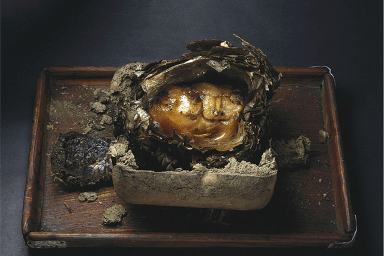
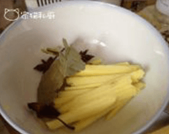

【寻觅之旅】德国摄影师眼中的中国美食-叫化鸡。
叫花鸡，是江南著名的汉族菜肴，常熟著名菜肴，属于苏帮菜。其历史悠久，通常是把加工好的鸡用泥土和荷叶包裹起好，用烘烤的方法制作出来的一道特色菜。其色泽枣红明亮，芳香扑鼻，板酥肉嫩，是家宴野餐，馈赠亲友之上品。
叫花鸡是江苏常熟的传统名菜，明末清初，常熟虞山脚下一个叫花子偷鸡之后一无炊具二无调料三无煺毛的开水，杀鸡后掏出内脏，糊上泥巴，堆积些败枝松叶烤了起来。此DIY吃法可能早就被叫花子们发明了，因此金庸老先生将常熟叫花鸡提前到南宋年间，也似乎说得过去。
料理步骤
-
- 
- 1.生姜、香叶洗干净，生姜削皮，一半切成片。
-
- 2.3大勺料酒、3大勺生抽、1大勺老抽、1大勺耗油、1大勺白糖、2小勺盐加上姜蓉调成酱汁。
-
- 3.整鸡一只洗净后，将泡发、去根的香菇和姜丝、香菜塞入鸡肚子。倒一些酱汁到鸡肚子里，用牙签封上。
-
- 4.再用面团将鸡包起来。烤箱上下火150度预热，将面团放入烤箱中下层烤大约20分钟。
小贴士
- 1. 先用刀背将鸡腿的骨头敲断， 方便包裹定型；
- 2. 腌制鸡肉的时间要长一些， 中间勤翻动一下， 按摩帮助入味；
- 3. 准备烤制前再在上面抹一层五香粉和胡椒粉混合的调料；
- 4. 荷叶是夏天的， 比较干， 先用清水泡上三十分钟。
WUOOO
16:27:12 2016/03/28加入适量的白酒和面， 能让烤出的鸡散发出独有的香味!
麦叔
16:27:12 2016/03/28加入适量的白酒和面， 能让烤出的鸡散发出独有的香味!腌制过后的调味料将香菇和洋葱一起拌， 不仅调味， 而且让鸡肉更香加入适量的白酒和面， 能让烤出的鸡散发出独有的香味!腌制过后的调味料将香菇和洋葱一起拌， 不仅调味， 而且让鸡肉更香。
查看全文WUOOO
16:27:12 2016/03/28加入适量的白酒和面， 能让烤出的鸡散发出独有的香味!
麦叔
16:27:12 2016/03/28加入适量的白酒和面， 能让烤出的鸡散发出独有的香味!腌制过后的调味料将香菇和洋葱一起拌， 不仅调味， 而且让鸡肉更香加入适量的白酒和面， 能让烤出的鸡散发出独有的香味!腌制过后的调味料将香菇和洋葱一起拌， 不仅调味， 而且让鸡肉更香。
查看全文